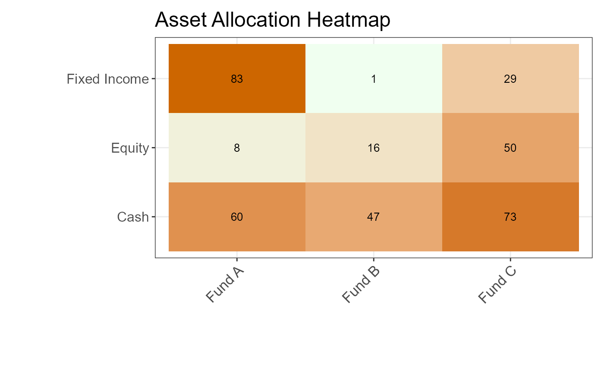

Charts Showcase
charts.RmdIn this vignette well review and showcase some examples of the charts
and visualization supported by fairlytics. The vignette
helps with familiarizing the names of the chart functions for the
user.
Deviation Chart
library(plotly)
test_df <- data.frame(
instrument = c("Instrument A", "Instrument B", "Instrument C"),
active_weight = c(0.002, -0.001, 0.0003)
)
chart <- ActiveWeightsDeviationChart(df = test_df,
instrument_col = "instrument",
active_weight_col = "active_weight",
min_band = -0.0005,
max_band = 0.0005)
ggplotly(chart)Asset Allocation HeatMap
test_df <- data.frame(
fund = rep(c("Fund A", "Fund B", "Fund C"), each = 3),
asset_class = rep(c("Equity", "Fixed Income", "Cash"), 3),
allocation = runif(9, 0, 1)
)
AssetClassAllocationTable(df = test_df,
x_col = "fund",
y_col = "asset_class",
value_col = "allocation",
chart_title = "Asset Allocation Heatmap")
Portfolio Model Table
library(plotly)
portfolio_model_df <- data.frame(
account_code = c('abc', 'xyz', 'test0001'),
asset_class = c('Equities', 'Bonds', 'Commodities'),
mkt_value = c(300, 200, 100),
port_wgt = c(0.5, 0.3, 0.2),
model_wgt = c(0.4, 0.4, 0.2),
active_wgt = c(0.1, -0.1, 0.0)
)
PortfolioModelTable(
df = portfolio_model_df,
mkt_value = "mkt_value",
port_wgt = "port_wgt",
model_wgt = "model_wgt",
active_wgt = "active_wgt"
)Relative Weight Bar
library(plotly)
relative_df <- data.frame(
instrument = c("Instrument A", "Instrument B", "Instrument C"),
weight = c(0.1, -0.05, 0.2),
fund_label = c("Fund 1", "Fund 1", "Fund 2")
)
chart <- RelativeWeightBarChart(df = relative_df,
instrument_col = "instrument",
weight_col = "weight",
fund_label_col = "fund_label",
txt_abv_grph = 0.02)
ggplotly(chart)Line Charts
For line charts fairlytics support two different
plotting engines. You can use highcharter or ggplot2 as your plotting
engine.
ggplot Line Chart
library(ggplot2)
library(plotly)
library(lubridate)
test_data <- data.frame(
Date = seq.Date(from = Sys.Date() - 10, by = "day", length.out = 10),
Value = runif(10),
ColorGroup = rep(c("Red", "Blue"), each = 5),
Group = rep(c("A", "B"), each = 5)
)
chart <- LineChart(
df = test_data,
x_col = "Date",
y_col = "Value",
color_col = "ColorGroup",
group_col = "Group",
chart_title = "ggplot Line Chart",
percent_y_axis = TRUE
)
ggplotly(chart)Highcharter Line Chart
library(highcharter)
library(lubridate)
data <- data.frame(
Date = seq.Date(from = Sys.Date() - 10, by = "day", length.out = 10),
Value = rnorm(10),
Group = rep(c("A", "B"), each = 5)
)
LineChartr(
df = data,
x_col = "Date",
y_col = "Value",
color_col = NULL,
group_col = "Group",
chart_title = "Highcharter Line Chart"
)line chart wrapper
LineChartWrapper function can be used to create a line
chart and you can specify which plot engine to use between ggplot2 and
highcharter.
library(ggplot2)
library(plotly)
library(highcharter)
library(lubridate)
data <- data.frame(
Date = seq.Date(from = Sys.Date() - 10, by = "day", length.out = 10),
Value = runif(10),
ColorGroup = rep(c("Red", "Blue"), each = 5),
Group = rep(c("A", "B"), each = 5)
)using ggplot2
chart_ggplot2 <- LineChartWrapper(
df = data,
x_col = "Date",
y_col = "Value",
color_col = "ColorGroup",
group_col = "Group",
chart_title = "Interactive Line Chart (ggplot2)",
plot_engine = "ggplot2"
)
ggplotly(chart_ggplot2)using HighCharter
LineChartWrapper(
df = data,
x_col = "Date",
y_col = "Value",
color_col = "ColorGroup",
group_col = "Group",
chart_title = "Line Chart Highcharter)",
plot_engine = "highcharter"
)Calender Returns Table
returns_df <- data.frame(
Year = c(2023, 2024),
Jan = c(0.05, 0.04),
Feb = c(0.02, 0.03),
Mar = c(0.02, 0.03),
Apr = c(-0.01, 0.00),
May = c(-0.2, 0.00),
Jun = c(-0.01, 0.00),
Jul = c(-0.01, 0.00),
Aug = c(-0.01, 0.01),
Sep = c(-0.01, 0.00),
Oct = c(-0.01, 0.00),
Nov = c(-0.01, 0.00),
Dec = c(-0.01, 0.00),
YTD = c(0.06, 0.07)
)
CalendarReturnsTable(returns_df)